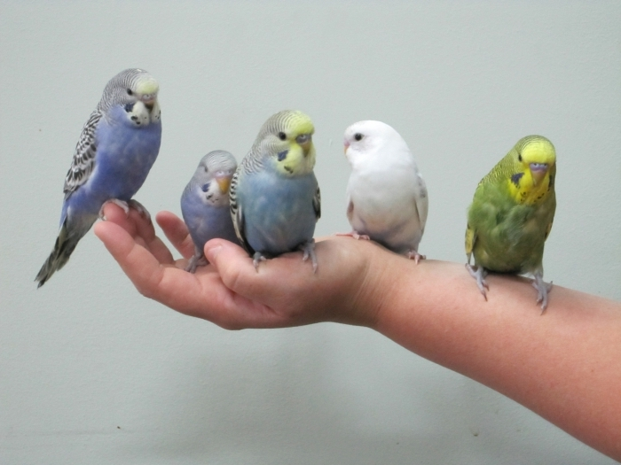

Как приручить попугая к рукам
Процесс приручения попугая очень долгий и трудоемкий. После того, как Вы принесли его в дом, нужно несколько дней дать ему привыкнуть к присутствию человека возле клетки. Также за это время птица запомнит Ваш голос и перестанет бояться его. После этого можно начинать задумываться, как приручить попугая к рукам. Первыми действиями должны стать попытки передать ему сквозь клетку зернышко или кусочек фрукта. Также за это время можно определить предпочтение в еде Вашего питомца. Процесс прикармливание должен продолжаться до тех пор, пока попугай не станет подходить и забирать угощение. После того, как это будет достигнуто, нужно начинать пробовать передавать еду на ладони. Момента, когда питомец будет смело есть с ладони, можно ждать достаточно долго. Но, со временем любознательность переборет осторожность, и попугай попробует взять еду с Вашей ладони.

В совершенно крайних случаях, можно использовать метод «приручения голодного птенца». Для этого следует на ночь убрать весь корм из клетки. Проснувшись утром и не найдя еду, попугай будет вынужден принять пищу из ваших рук. Но важно помнить, что этот метод должен применяться только в тех случаях, когда птица совершенно не идет на контакт.
Также стоит помнить, что от рук не должно неприятно пахнуть. Попугаи очень не любят запах сигарет и неохотно идут на руки курильщиков. Перед началом процесса приручения помойте руки в простой воде без использования мыла или какого-либо крема.
Также помните, что попугай ценит терпение и время, проведенное с ним. Нельзя принуждать его делать что-то. Исключение составляют лишь те случаи, когда птица нуждается в лечении.
Таким образом, зная как приручить попугая к рукам, процесс воспитания станет для Вас увлекательным занятием на долгие дни, а Ваш питомец получит «достойное образование» и повзрослев будет радовать Вас своим присутствием.